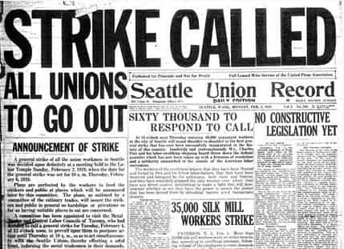
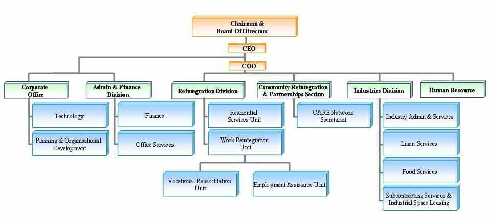

Davis was trained as a Historian at McMaster University, and as an Infantry soldier in the Canadian Forces. An author, strategist, Catholic medievalist, and an entrepreneur, his writing can be found at Stares at the World.


I was recently sitting down with an old acquaintance, and the conversation turned to his job. He works in construction, and was frustrated with the fact that during the last economic downturn wages went down, but despite the recent uptick they hadn’t risen.
This problem of cost disease is endemic throughout the West. The volume on your soda bottle goes down, but the price remains the same. You take on more responsibilities at work, but you continue to make the same wage. New technologies lay people off, while demanding higher skill levels amongst those who remain, with no commensurate increase in pay.
I’m a strong believer in the efficiency of free markets, but that doesn’t mean I’m opposed to workers unions. Free association is a crucial element in a free society, and the decision to bargain collectively is just one of its forms. Furthermore, the union can serve a vital function in the economy.
No sane Capitalist wants to benefit from the tragedy of the commons – short term profit at the cost of destroying the industry – and unions can provide a vital signalling function, allowing owners to understand what things are like “on the ground”, alleviating the long-term costs of aggressive, exploitative policies, which can wind up destroying the labor force which their company relies upon.
There is nothing inherently wrong with unions, but it’s become a dirty word because of the dirty practices they’ve engaged in. At the turn of the last century, factory owners were hiring the Pinkerton detective agency to threaten and assault striking workers; the unions responded by getting into bed with organized crime and Democrat politicians, embracing the Marxist “gimme dat” philosophy, which is just as destructive as the “rape and pillage” philosophy of Robber Barons.
None of this indicts the principle of unionization; it is merely an indictment of corrupt practices. And in this era of increased globalization – of the new Robber Barons who live overseas, and plan to turn the entire world into a company store – a return to domestic workers rights and fair negotiations is a crucial plank in maintaining middle class independence.
Complaining is one thing; anybody who’s ever worked an honest day for honest pay knows that the complaints are endless. Bonding over those complaints is half of the reason bars were invented. But to put together a workers’ union, you need to have more than just complaints.
First, you need to lead by example. It’s not enough to be an opinionated journeyman in a green hardhat; at that stage, you might as well be a Social Justice Warrior, fresh out of college, and full of ideas on how everyone else should live their lives.
If you want to make a positive difference in the world, you need to start by making a positive difference in your day-to-day life. You need to be a competent employee, with several years of experience under your belt, and a wide familiarity with the trades which are complimentary to your specialty. You need to be able to demand quality out of others, by performing quality yourself.
Second, you need to be familiar with the financials of the market in which you operate. After all, what we’re talking about is negotiating with owners who are more concerned with interest rates and government subsidies than with actually building the damned product.
The core of your complaint as a tradesman is that they’re failing to appreciate the struggles of you and your brothers on the factory floor; ergo, it’s incumbent upon you to understand the struggles that they’re dealing with up in the offices. Nothing gets built without a skilled pair of hands, but that skilled pair of hands will remain idle if somebody isn’t working with the bank to finance the whole project. You need to educate yourself about their realm of expertise if you ever want to negotiate with them like an adult.
Third, you need to do a moral inventory. Your frustrations are centered around the greed and ignorance of the owners, correct? In that case, you need to ensure that you aren’t motivated by greed in turn.
During the late Twentieth Century, Unions became greedy for power, and became just as bad as that which they opposed. They consolidated power across industries, sought the backing of government legislators, and placed unreasonable demands upon the owners, resulting in the collapse of many industries throughout North America.
Often, these Unions would prey upon the journeyman, forcing them to pay dues so that they could live like the fat cats they decried, and wound up being just as responsible for the rust belt as the globalists who want a world of serfs.
Class envy will destroy you. It is always an excuse for the spendthrift ways of the person who voices it. Whether it’s a college graduate with a useless degree, or a plumber who blows his paycheck at the bar every weekend, class envy is a sign of immaturity and irresponsibility. If you haven’t learned how to act like an adult, then you’re in no position to help your fellow worker.

Grand action capture our imagination, and when it comes to unions there’s nothing grander than the general strike. The men are all organized, the news channels are out in full force, and the owners are sweating bullets as their assembly lines fail to turn. It’s a dramatic vision, the oppressed rising up to throw off the shackles of their oppressors… but it’s also expensive and destructive for all of those involved.
Consider the Second Amendment for a moment, and why it is that men carry a pistol on their hip. Is it to live in some sort of John Wayne fantasy world? Or is it to deter crime? You’re far better off avoiding both the mugger and the police investigation which comes from ventilating said mugger.
Your focus shouldn’t be on the fight against the bosses, so much as the solutions which help you both. A skilled tradesman, who shows up to work on time, stays sober, and does good work, is a massive carrot; depending upon the industry, they can be few and far between. Instead of focusing on the strike, what if you focused on creating a network of men you could vouch for? A loose association of professionals whose work was guaranteed?
By offering the owners a carrot, you’ve managed to get your foot in the door. Because your group is reliable, they can already start demanding higher wages than others in your industry – and because you’re earning higher wages, there will be plenty of others who’ll want to join you. Eventually, if you need to, you’ll have enough people in your association to create a meaningful strike… but if you’ve been developing good relationships with the owners, in all likelihood you won’t have to.

The advantage to starting off small, is that you have less need for organization. But if you’re going to be successful, you need to start planning your organization from the very beginning.
Conquest’s Second Law of Politics states that “Any organization not explicitly right-wing sooner or later becomes left-wing.” What he means is that any organization which doesn’t explicitly know it’s own purpose, eventually devolves to the lowest common denominator. This is why online movements always fail, and if your association devolves into nothing but grumbles and complaints, all you’ll wind up doing is blacklisting yourself and your confederates.
It is crucial that you maintain clarity purpose for your organization and perspective and concern for your fellow man, neither exploiting them through punitive licensing/union fees, nor destroying the industry through excessive demands.
To do this will require education. Just as you learned about the financial difficulties the owners are forced to deal with, you’ll have to learn about organizational difficulties. The Founding Fathers of the United States were successful because they had studied many forms of government before waging their revolution. If you plan to succeed, you will likewise study the many successes and failures which exist in the pages of history.
Individual autonomy within hierarchy is the foundation of Western Civilization; it is what has made the West the most successful society on the planet. Even back in medieval times, a peasant might genuflect to a noble, but he wasn’t expected to kowtow while shaking in fear. And for his part, the noble treated even the meanest of peasant huts as a castle, politely requesting admittance rather than forcing his way in.
The spirit of globalism rejects this mutual respect, and the inherent dignity upon which all men have claim. Instead, it seeks to atomize the individual by inflaming zealous loyalty to monolithic groups. The solution is to reject both these extremes. Neither the extreme individualism, where each man is out for himself, nor the blind loyalty of an “us versus them” ethos. Assertiveness is the key: demand respect from others, while giving respect in return.
A new wave of organic, conscientious, and responsible unionization – or association, or network, or whatever term you wish – could play an integral role in reestablishing the American Middle Class, as well as her industrial base. Every single one of us has a role to play, and there are great opportunities out there for those who who are willing to take on the mantle of responsibility, who are willing to go out and seize opportunity, and who are willing to hold themselves to the standard that made our ancestors great.
Read More: Ignore The Unwarranted Hate Of Trade Jobs